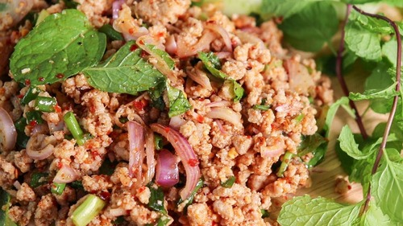
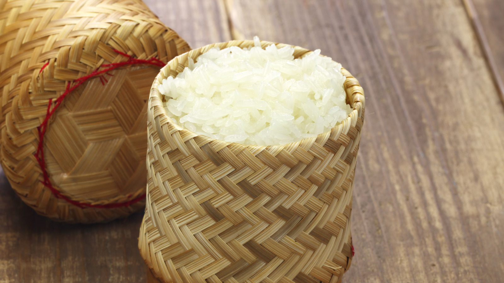
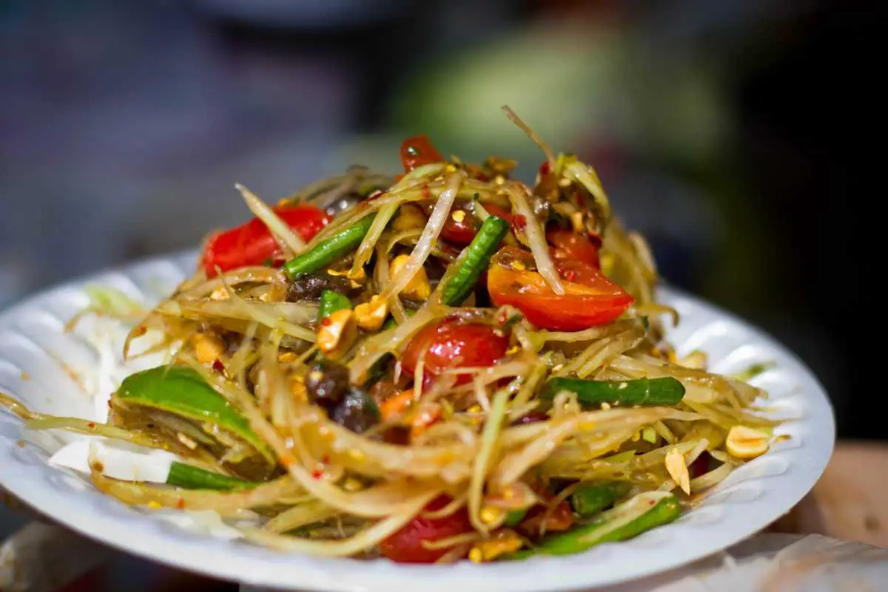
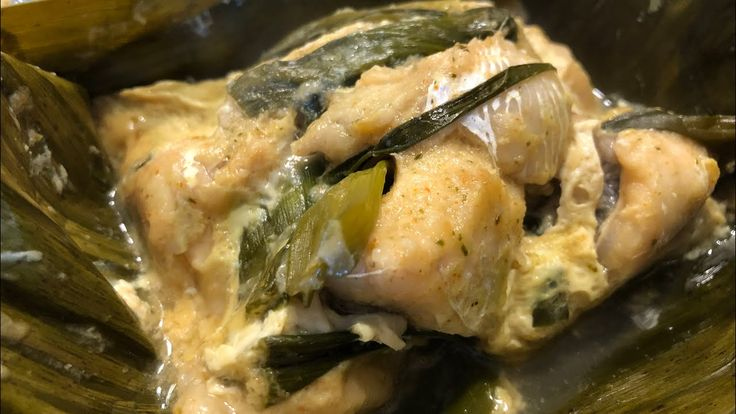

ອາຫານລາວຍອດນິຍົມ

ລາບໝູ
ລາບໝູແມ່ນອາຫານລາວທີ່ມີຊື່ສຽງທີ່ສຸດ, ເຮັດຈາກຊີ້ນໝູສັບລະອຽດປະສົມກັບສະໝຸນໄພລາວ ແລະ ເຄື່ອງປຸງລົດຊາດ.
ອ່ານເພີ່ມເຕີມ

ເຂົ້າໜຽວ
ເຂົ້າໜຽວແມ່ນອາຫານຫຼັກຂອງຄົນລາວ, ກິນກັບອາຫານລາວເກືອບທຸກຊະນິດ ແລະ ເປັນສ່ວນສຳຄັນຂອງວັດທະນະທຳລາວ.
ອ່ານເພີ່ມເຕີມ

ຕຳໝາກຫຸ່ງ
ຕຳໝາກຫຸ່ງລາວມີລົດຊາດເຜັດ, ສົ້ມ, ເຄັມ ແລະ ຫວານ ປະສົມກັນຢ່າງລົງຕົວ, ເປັນອາຫານທີ່ນິຍົມກິນໃນທຸກໆມື້.
ອ່ານເພີ່ມເຕີມ
ເອາະຫຼາມ
ເອາະຫຼາມແມ່ນແກງລາວດັ້ງເດີມທີ່ເຮັດຈາກຊີ້ນງົວ ຫຼື ຊີ້ນຄວາຍ, ຜັກ ແລະ ສະໝຸນໄພລາວຫຼາຍຊະນິດ.
ອ່ານເພີ່ມເຕີມ
ເຂົ້າປຽກເສັ້ນ
ເຂົ້າປຽກເສັ້ນແມ່ນອາຫານລາວທີ່ເຮັດຈາກເສັ້ນທີ່ເຮັດດ້ວຍມື ແລະ ນ້ຳແກງທີ່ມີລົດຊາດຊຸ່ມຊື່ນ.
ອ່ານເພີ່ມເຕີມ
